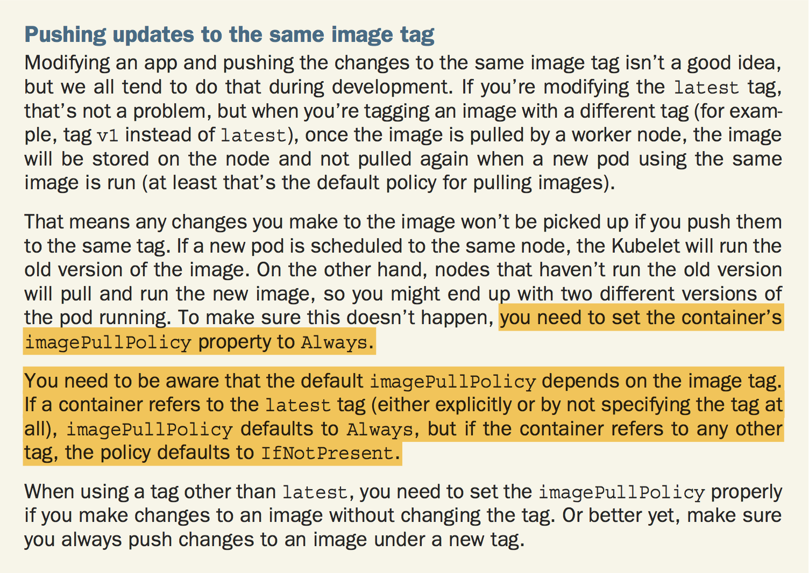

Docker
Table of Contents
| Author | Hao Ruan (ruanhao1116@gmail.com) |
| Date | 2019-04-07 10:27:35 |
Table of Contents
1 Docker 守护进程
可以使用 -H 标志调整守护进程绑定监听接口的方式
客户端也必须指定接口的变化，如: docker -H :2375 , 或者设置环境变量 DOCKER_HOST:
export DOCKER_HOST="tcp://0.0.0.0:2375"
1.1 修改守护进程的端口
docker daemon -H tcp://0.0.0.0:2375
1.2 修改守护进程的套接字路径
docker daemon -H unix://home/docker/docker.sock
2 容器操作
2.1 运行容器
2.1.1 前台运行
docker run --name my_container -i -t ubuntu /bin/bash
- -i: 保证容器中 STDIN 开启
- -t: 为容器创建伪终端
- –name: 命名必须唯一
2.1.2 后台运行
docker run --name my_container -d ubuntu <cmd>
2.1.3 公开端口
docker run --name my_container -p 80 -d ubuntu <cmd> # 将容器中的 80 端口绑定到宿主机的 8080 端口 docker run --name my_container -p 8080:80 -d ubuntu <cmd> docker run --name my_container -p 127.0.0.1:8080:80 -d ubuntu <cmd> docker run --name my_container -p 127.0.0.1::80 -d ubuntu <cmd> # 随机端口 # 公开在 Dockerfile 中通过 EXPOSE 指令公开的所有端口 docker run --name my_container -P -d ubuntu <cmd>
2.1.4 添加卷
docker run --name my_container -P -d -v $PWD/website:/var/www/html/ ubuntu <cmd> # 只读卷 docker run --name my_container -P -d -v $PWD/website:/var/www/html/:ro ubuntu <cmd> # 授权一个容器访问另一个容器的 Volume docker run --name my_container -P -d --volumes-from <cname> ubuntu <cmd>
2.1.5 指定网络
docker network create <name> docker run --name my_container -P -d --network <name> ubuntu <cmd>
2.1.6 提升权限
docker run --name my_container -P -d --previleged ubuntu <cmd>
容器对于宿主机拥有 root 权限，用于在 Docker 中运行 Docker 的场景
--cap-add=NET_ADMIN
默认 Docker 中的 root 用户的权限仍会有一定的限制，若服务需要用到小于 1024 的低位端口，需要赋予 root 更多的权限。 NET_ADMIN 是网络部分的权限 。
2.1.7 保存容器 ID 到指定文件中
--cidfile=/tmp/containerid.txt
2.1.8 进程运行完毕自动删除容器
--rm
适用于只用一次的容器
2.1.9 指定环境变量
--env MYSQL_ROOT_PASSWORD=123456
2.2 查看容器
2.2.1 正在运行的容器
docker ps
2.2.2 所有容器
docker ps -a
2.2.3 查看最后 x 个容器，不论运行或停止
docker ps -n <x>
2.2.4 查看容器中的进程
docker top <cname>
2.2.5 监控 cpu,mem,io 信息
docker stats
2.2.6 查看容器端口映射情况
如果 –network 为 host ，则无显示
docker port <cname> <port>
2.2.7 inspect
docker inspect <cname>
docker inspect -f "{{ range .Mounts }}{{.}}{{end}}" <cname>
2.3 删除容器
docker rm <cname> docker rm `docker ps -a -q` # 删除所有容器
3 Dockerfile
FROM ubuntu:14.04 MAINTAINER Hao Ruan "haoru@cisco.com" ENV REFRESHED_DATE 2017-04-19 COPY tomcat.jar /etc/ RUN ["apt-get", "-qq", "update"] WORKDIR /opt/cisco VOLUMN ["/opt/project"] ENTRYPOINT ["/usr/sbin/nginx"] EXPOSE 8080
3.1 构建镜像
3.1.1 build
docker build -t "<username>/<image_name>:<tag>" .
3.1.2 查看镜像
docker images [<username>/<image_name>]
3.1.3 查看镜像构建过程
docker history <image_hash>
3.1.4 删除镜像
docker rmi # 删除镜像 docker rmi `docker images -a -q` # 删除所有镜像
3.2 常用指令
3.2.1 ENTRYPOINT & CMD
- ENTRYPOINT
- defines the executable invoked when the container is started.
- CMD
- specifies the arguments that get passed to the ENTRYPOINT.
Although you can use the CMD instruction to specify the command you want to execute when the image is run,
the correct way is to do it through the ENTRYPOINT instruction and to only specify the CMD if you want to define the default arguments.
The image can then be run without specifying any arguments:
docker run <image>
or with additional arguments, which override whatever’s set under CMD in the Dockerfile:
docker run <image> <arguments>
如果要覆盖 Dockerfile 中的 ENTRYPOINT 指令, 须由 docker run -e 指定。
3.2.1.1 shell and exec forms
- shell form
- For example, ENTRYPOINT node app.js.
- exec form
- For example, ENTRYPOINT ["node", "app.js"].
The difference is whether the specified command is invoked inside a shell or not.
exec form:
$ docker exec 4675d ps x PID TTY STAT TIME COMMAND 1 ? Ssl 0:00 node app.js 12 ? Rs 0:00 ps x
shell form:
$ docker exec -it e4bad ps x
PID TTY STAT TIME COMMAND
1 ? Ss 0:00 /bin/sh -c node app.js
7 ? Sl 0:00 node app.js
13 ? Rs+ 0:00 ps x
Should always use the exec form of the ENTRYPOINT instruction.
4 Docker Networking
Docker Networking 允许用户创建自己的网络，容器间通过此技术可以相互通信，包括跨越宿主机的通信（overlay 网络）
容器间可通过 <cname>.<net_name> 方式通信
docker network create <net_name> # 创建网络 docker network inspect <net_name> # 查看网络 docker network ls docker network rm <net_name> docker network connect <net_name> <cname> # 将已有容器添加到网络 docker network disconnect <net_name> <cname>
4.1 Docker 中的桥接技术
在安装了 Docker 的宿主机上的 docker0 设备就是个虚拟网桥：

Figure 1: 容器与外部通信使用 veth

Figure 2: docker0 作为桥接网卡
4.1.1 容器访问外部网络
宿主机创建一个虚拟网桥 docker0，每个容器对应一个虚拟网络设备（TAP设备）， 与 docker0 一起构成一个虚拟网络，通过虚拟网桥实现相互通信。 宿主机的物理网络设备 eth0 作为内部虚拟网络的 NAT 网关，容器通过 eth0 访问外部网络： iptables 规则类似于： iptables -t nat -A POSTROUTING -s 127.0.0.0/8 ! -d 127.0.0.0/8 -j MASQUERADE 其中 127.0.0.0/8 是内部容器的网络，如果目标地址非内部虚拟网络，则进行 NAT 转换。
4.1.2 外部访问容器内部网络
要让外部网络能够访问容器，通过 DNAT 来实现： iptables -t nat -A DOCKER ! -i docker0 -p tcp -m tcp --dport 49153 -j DNAT --to-destination 127.0.0.3:22 其中 127.0.0.3:22 是内部容器 IP 和 SSHD 端口，在宿主机上映射为 49153 端口。
4.1.3 自定义网桥
也可以使用自定义网桥 br0 ，从而使得宿主机与容器属于同一个网络，架构如图所示：

Figure 3: 自定义网桥结构图
5 Docker Save & Export
5.1 Export
用于导出容器，丢失镜像层次关系。
docker export hinaWeb > hinaWeb_Export.tar cat hinaWeb_Export.tar | docker import - local/hinaweb
5.2 Save
导出镜像，保留层次关系。
docker save ubuntu:latest > hinaWeb_Save.tar docker load < hinaWeb_Save.tar
6 Docker Compose
6.1 Compose file 示例
version: "3" services: redis.aio: container_name: "Cache_Server" image: "docker.finditnm.com/netmanager/redis:v3.2.0-2" restart: "on-failure" logging: options: max-size: "1024k" max-file: "2" volumes: - ${NM_DATA_DIR}/redis:/opt/maglev/srv/redis network_mode: "host" environment: CONFIG_DIR: /opt/maglev/etc CONFIG_FILE: /config/maglev.conf command: ["redis-server","/opt/maglev/etc/redis.conf","--maxmemory","${REDIS_MAX_MEM}mb","--bind","127.0.0.1"] mongo.aio: container_name: "Database_Server" image: "docker.finditnm.com/netmanager/mongodb:v1.0.2-3.4.9" restart: "on-failure" logging: options: max-size: "1024k" max-file: "2" volumes: - ${NM_DATA_DIR}/mongodb:/opt/maglev/srv/mongodb network_mode: "host" environment: CONFIG_DIR: /opt/maglev/config command: ["/usr/bin/mongod","--dbpath","/opt/maglev/srv/mongodb","--wiredTigerCacheSizeGB",".25","--bind_ip","127.0.0.1"] rabbitmq.aio: container_name: "Queuing_Server" image: "docker.finditnm.com/netmanager/rabbitmq:v3.6.5-2" restart: "on-failure" logging: options: max-size: "1024k" max-file: "2" volumes: - ${NM_DATA_DIR}/rabbitmq:/opt/maglev/srv/rabbitmq network_mode: "host" environment: CONFIG_DIR: /etc/rabbitmq RABBITMQ_NODE_IP_ADDRESS: 127.0.0.1 command: "rabbitmq-plugins disable --offline rabbitmq_management && /usr/lib/rabbitmq/bin/rabbitmq-server start" tomcat.aio: container_name: "FindIT_Manager" image: "docker.finditnm.com/netmanager/nm-aio-services:latest" restart: "on-failure" environment: DCLOUD: ${DCLOUD} DISABLE_NORTHBOUND: ${DISABLE_NORTHBOUND} JAVA_OPTS: -Xms${TOMCAT_JAVA_MIN_MEM}m -Xmx${TOMCAT_JAVA_MAX_MEM}m logging: options: max-size: "10240k" max-file: "2" volumes: - ${NM_LOG_DIR}:/opt/cisco/nm/log - ${NM_UPGRADE_DIR}:/opt/cisco/nm/upgrade - ${NM_DATA_DIR}/smartlic:/opt/cisco/nm/smartlic - ${NM_DATA_DIR}/backup:/opt/cisco/nm/backup - ${NM_DATA_DIR}/restore:/opt/cisco/nm/restore network_mode: "host" depends_on: - "redis.aio" - "mongo.aio" - "rabbitmq.aio"
6.2 启动
docker compose -f <compose-file> up [-d]
6.3 停止
docker compose -f <compose-file> stop
6.4 删除
docker compose -f <compose-file> rm -f
7 Internals
7.1 Images, registry and container

7.2 Image Pulling Policy

7.3 Container Vs VM